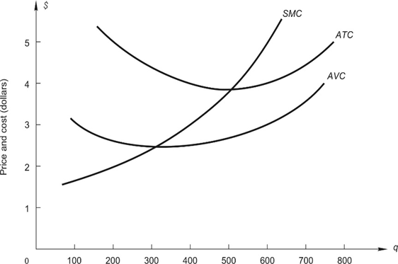
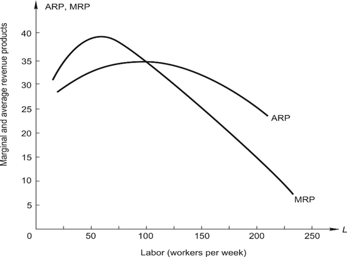

جدول التكاليف الكلية لشركة تعمل في سوق منافسة كاملة موضح أدناه. التكاليف الثابتة (Fixed Costs) للشركة هي $60.
| Output (Q) | Variable Cost (VC) |
|---|---|
| 0 | 0 |
| 1 | 10 |
| 2 | 15 |
| 3 | 30 |
| 4 | 60 |
| 5 | 105 |
المطلوب:
عشان نحل السؤال ده بسهولة، لازم نحسب التكلفة الكلية (TC)، والتكلفة الحدية (MC)، ومتوسط التكلفة الكلية (ATC)، ومتوسط التكلفة المتغيرة (AVC) لكل مستوى إنتاج.
الجدول بعد الحسابات:
| Q | VC | FC | TC | MC | ATC | AVC |
|---|---|---|---|---|---|---|
| 0 | 0 | 60 | 60 | --- | --- | --- |
| 1 | 10 | 60 | 70 | 10 | 70 | 10 |
| 2 | 15 | 60 | 75 | 5 | 37.5 | 7.5 |
| 3 | 30 | 60 | 90 | 15 | 30 | 10 |
| 4 | 60 | 60 | 120 | 30 | 30 | 15 |
| 5 | 105 | 60 | 165 | 45 | 33 | 21 |
بما إننا في سوق منافسة كاملة، الشركة بتفضل تزود الإنتاج لحد ما الإيراد الحدي يساوي التكلفة الحدية ($MR = MC$). وبما إن السعر ثابت، يبقى $P = MR = 15$. لو بصينا في الجدول:
الربح بيتحسب بالمعادلة دي: $\text{Profit} = \text{TR} - \text{TC} = (P \times Q) - \text{TC}$
سعر التعادل هو أقل نقطة على منحنى متوسط التكلفة الكلية (ATC). لو السعر جاب النقطة دي، الشركة مش هتكسب ولا هتخسر. من الجدول، أقل ATC هو 30 (بيحصل عند Q=3 أو Q=4). إذن، Break-even price = $30.
سعر الإغلاق هو أقل نقطة على منحنى متوسط التكلفة المتغيرة (AVC). لو السعر نزل عنها، الشركة تقفل أحسن لها عشان مش هتقدر تغطي حتى تكاليف التشغيل. من الجدول، أقل AVC هو 7.5 (بيحصل عند Q=2). إذن، Shut-down price = $7.5.
الرسم البياني أدناه بيوضح منحنيات التكلفة لشركة في سوق منافسة كاملة. 
المطلوب:
القاعدة الذهبية: بننتج عند النقطة اللي فيها $MR = MC$. وبما إن السعر $5، بنمشي مع خط الـ 5 دولار لحد ما يقطع منحنى التكلفة الحدية (MC). من الرسمة، نقطة تقاطع السعر $5 مع منحنى MC بتحصل عند كمية 600 وحدة.
عشان نحسب الربح، بنطرح متوسط التكلفة الكلية (ATC) من السعر، ونضرب في الكمية. $\text{Profit} = (P - \text{ATC}) \times Q$ من الرسمة، عند الكمية 600:
أولاً نجيب الكمية المثلى. تقاطع الـ $3 مع منحنى MC بيحصل عند Q = 400. عند الكمية 400:
في المدى الطويل، الشركات بتدخل أو تخرج من السوق لحد ما الأرباح الاقتصادية تبقى صفر (Zero Economic Profit). ده بيحصل عند سعر التعادل، اللي هو نقطة تقاطع MC مع أدنى نقطة في منحنى ATC. من الرسمة، أقل نقطة لمنحنى ATC هي عند الكمية 500 تقريباً، والسعر عندها بيساوي 3.9 دولار تقريباً. إذن السعر على المدى الطويل هينزل ويثبت عند $3.9.
الرسم البياني ده لشركة في منافسة كاملة بتعتمد على مدخل متغير واحد وهو العمالة (Labor). 
المطلوب:
في سوق العمل، الشركة بتفضل تعين عمال لحد ما تكلفة العامل (Wage) تتساوى مع القيمة اللي بيضيفها العامل للإيرادات (MRP - Marginal Revenue Product). $\text{Rule: } W = \text{MRP}$ بنبص على الرسمة، خط الأجر $20 بيقطع منحنى הـ MRP فين؟ هنلاقيه بيقطعه عند 175 عامل. إذن الشركة هتعين 175 عامل.
بنفس الطريقة، هنمشي مع خط الأجر $15 وننزل عند نقطة تقاطعه مع منحنى الـ MRP (المنحنى الأزرق). هنلاقيه بيقطع عند 200 عامل. إذن الشركة هتعين 200 تخفيض الأجر بيشجع الشركة تعين ناس أكتر عشان تزود الإنتاج.
الشركة بتقرر تقفل لما العامل مبيقدرش حتى يجيب متوسط الإيرادات اللي تغطي أجرته، ده بيحصل لما منحنى الـ MRP يقطع منحنى متوسط إيراد الناتج (ARP) عند أعلى نقطة فيه. دي بالظبط نقطة الـ Shutdown. من الرسمة، أعلى نقطة لمنحنى الـ ARP (المنحنى البرتقالي) واللي بيتقاطع عندها مع المنحنى الأزرق (MRP) موجودة عند أجر يساوي 34 دولار تقريباً. لو الأجر زاد عن كده، الشركة استحالة تعين حد وهتقفل فوراً.